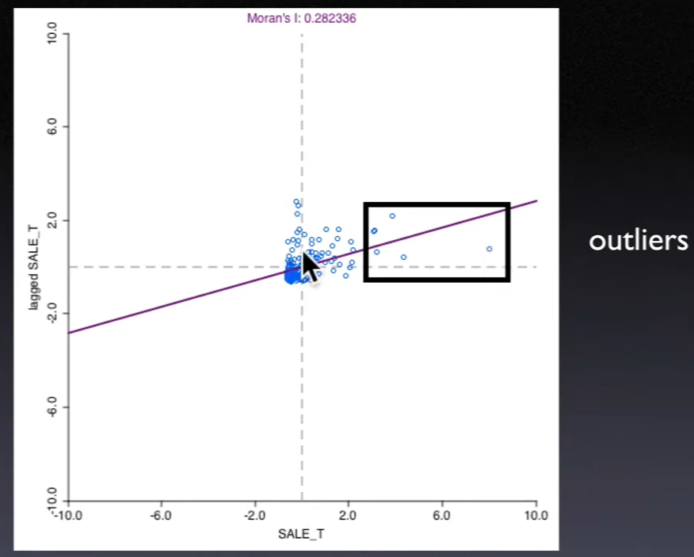
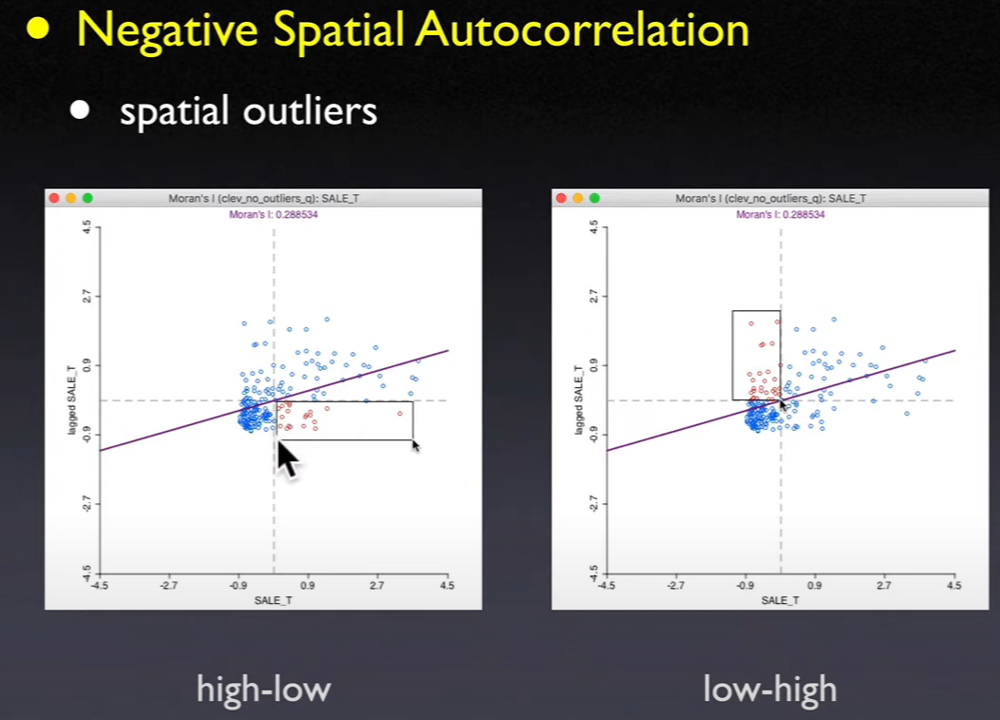
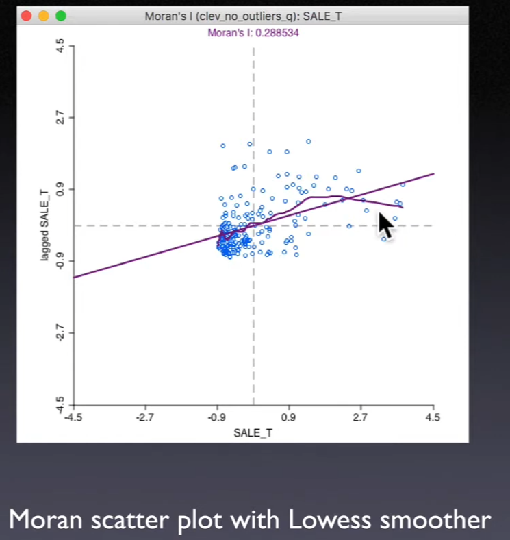
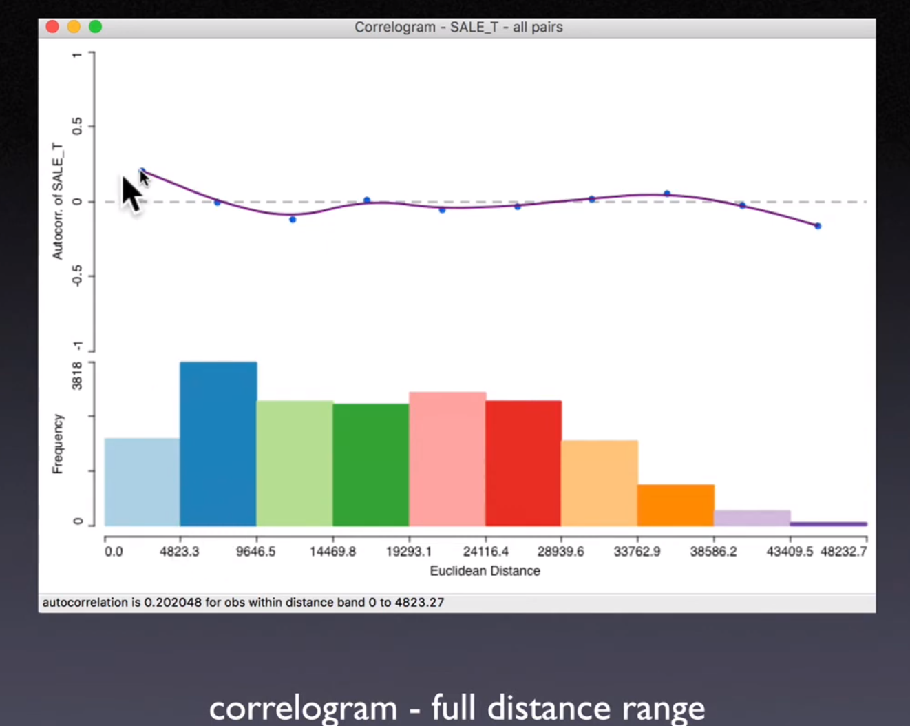
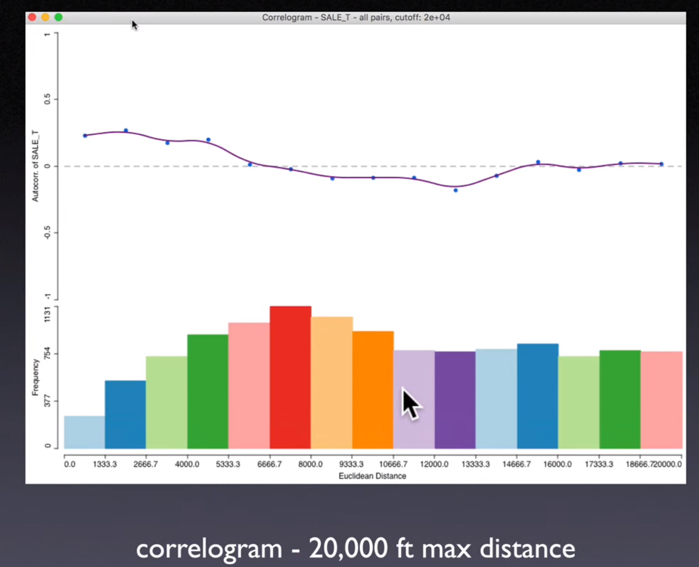
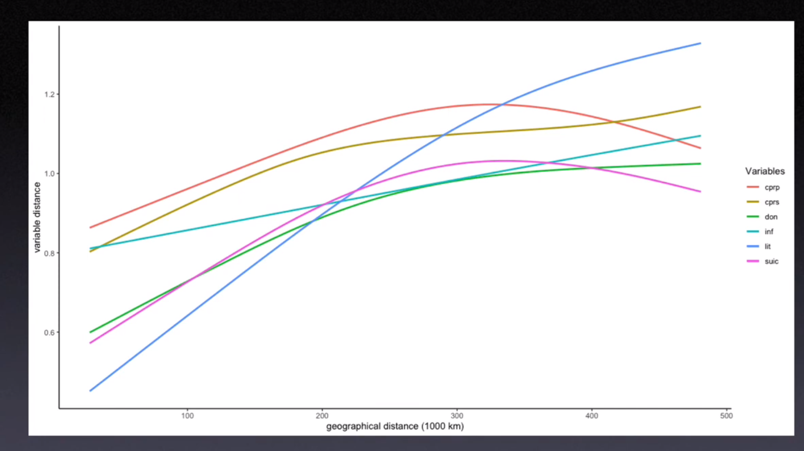
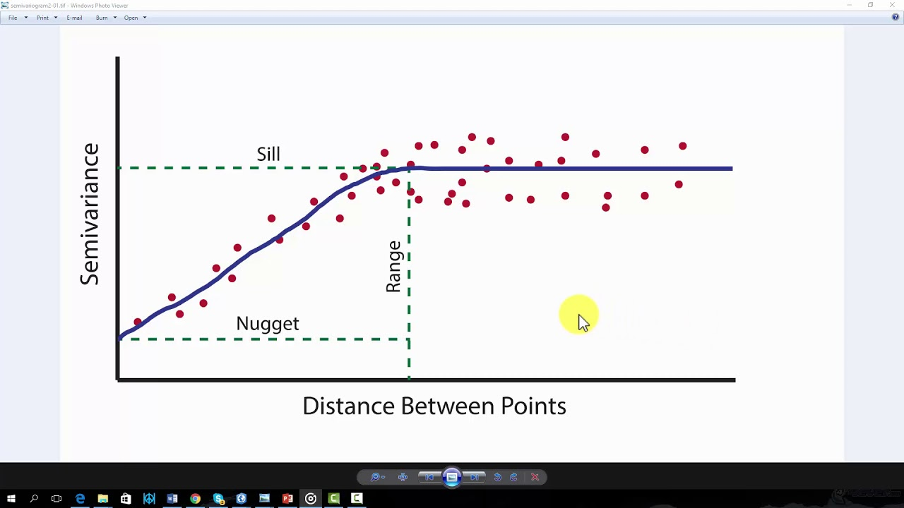

12. Visualizing Spatial Autocorrelation#
12.1. Moran Scatter Plot (Anselin 1996)#

12.1.1. Interpretation#
Moran's I is slope in a regression of \(\sum_jw_{ij} z_j\) on \(z_i\)
\(\sum_jw_{ij}z_j\) is the independent variable in this regression, called
spatial lagThe x-axis is value at each location, the y axis is
spatial lag(weighted average of neighboring values)
12.1.2. Categories of Local Spatial Autocorrelation#
Based on 4 quadrants / Relative to mean
Upper right and lower left are
positive spatial autocorrelationClusters of like values
Locations are similar to their neighbors
Lower right and upper left are
negative spatial autocorrelationSpatial outliers
Locations are different from their neighbors

12.1.3. Smoothing the Moran Scatter Plot#
Use local regression (
LOWESS) as a nonlinear smootherDiscover structural breaks in
global spatial autocorrelationAreas of high and low (or no) spatial autocorrelation
A form of
spatial heterogeneity

12.2. Correlogram#
12.2.1. Interpretation#
Range of
spatial autocorrelation(first hit the 0)Alternative to specifying
spatial weights(data-driven)Sensitive to kernel fit (choose
bandwidthandkernel function)May violate
Tobler's law

Moran's I plot is about Cross-product statistics of pair of observations, now we consider about non-parametric approach.
Calculate the cross-product (covariance / auto-covariance) of each pair, and plot it across the distance
\(\hat{Z_i}\): deviations from the mean
\(\frac{n(n-1)}{2}\) individual values of \(\rho_{ij}\) (unique pair from \(n\) elements)
Fit the function of \(\rho*{ij} = g(d*{ij})\)
Use
kernel estimator/local regressionDepends on choice of
kernel functionandbandwidthValues of the estimated \(g(d\_{ij})\) do not necessarily result in a valid
variance-covariance matrix
When first hit 0, means how far the
spatial interactiongoes, the following is waving around 0, basically the noise
Problems
When distance goes larger, the pair of observations decrease rapidly.
These “high-leverage” points may distort the whole pattern
Solution: Cut-off the distance by certain point

12.3. Smoothed Distance Scatter Plot (Anselin and Li, 2020)#
Plot geographical distance on the x-axis, and attribute distance on the y-axis
Euclidean geographical distance
Euclidean distance in attribute space
12.3.1. Concern#
Too many points \(\left( \frac{n(n-1)}{2} \right)\)
Smooth the scatter plot
Tobler’s law i.
Attribute distanceshould increase withgeographical distanceWe can also calculate the
attribute distanceof multiple variables
12.4. Semi-variogram (Matheron, 1963)#
12.4.1. Definition#
Semi-variance\(\gamma(s_1, s_2)\) is half the average squared difference between the value at points \(s_1\) and \(s_2\), it’s defined as
Fit the function \(\rho(s*1, s_2) = g(h)\)
\(h\) represents the geographical distance
The
exponential variogram model
The
spherical variogram model
The
Gaussian variogram model
12.4.2. Interpretation#
Nugget \(n\): Due to the
measurement erroror spatial source variation of smaller distance than sample unit, the value at the same location might have a different value as well.Sill \(s\): Limit of the variogram tending to infinity lag distances.
Range \(r\): The distance in which the difference of the variogram from the sill becomes negligible. indicates the range of
spatial autocorrelation